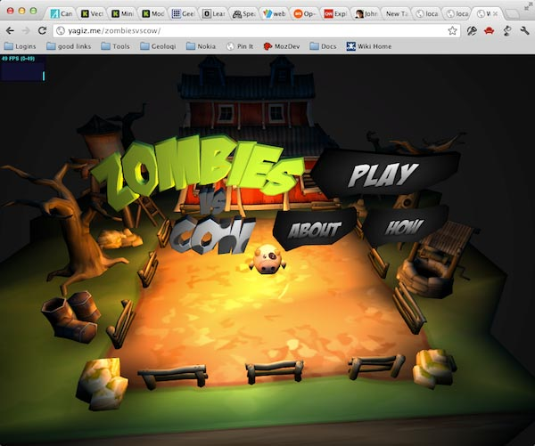
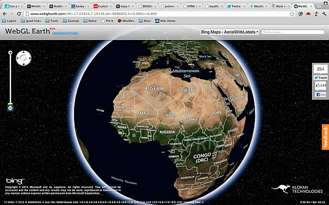
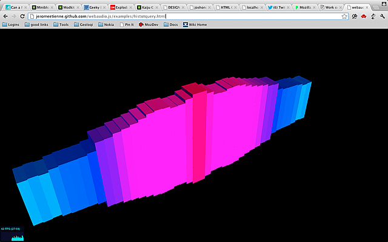
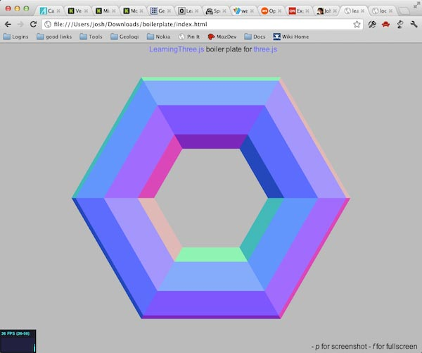
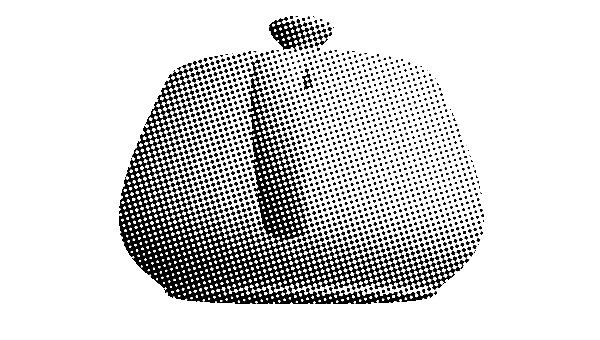

3D-графика через WebGL и ThreeJS
WebGL — это 3D для Интернета. Как следует из названия, это связано с OpenGL, стандартным промышленным API для аппаратного ускорения 3D-графики. 3D является гораздо сложнее 2D. Мы имеем дело не только с полной системой трёхмерных координат и связанной с этим математикой, но также должны больше беспокоиться о состоянии графического контекста. И это намного, намного больше, чем основные цвета и трансформация двумерного контекста.
В 2D мы рисуем фигуры с контурами, затем заливаем цветом. Это очень просто. С другой стороны, 3D включает в себя довольно сложный многоступенчатый процесс.
Для начала в трёхмерном пространстве у нас есть фигуры в виде геометрии, списка точек называемых «векторы». Далее, нам, возможно, потребуется дополнительная информация для фигуры. К примеру, нормаль к поверхности описывает направление, в котором свет отражается от фигуры. Затем, мы должны настроить источники света и камеру. Камера определяет точку зрения. Свет это точка в пространстве, которая определяет, откуда идёт свет. После настройки всего этого применяем шейдеры.
Шейдеры берут камеру, свет, нормали и геометрию как входные данные и превращают их в фактические пиксели. Я понимаю, что это очень упрощённое объяснение OpenGL, но, пожалуйста, потерпите. Есть два вида шейдеров, один используется для модификации векторов, чтобы создать окончательные отражения света, а другой рисует фактические пиксели. Последнее шейдеры по понятным причинам известны как пиксельные шейдеры.
Шейдеры по существу это крошечные программы, написанные на специальном языке OpenGL, который выглядит как разновидность Си. Этот код не очень легко писать, потому что он должен быть с массовым параллелизмом. Современный графический процессор, по существу, это специальный супер параллельный многоядерный чип, который делает одну вещь очень эффективно: отображает множество пикселей очень быстро.
Шейдеры это мощь современной графики, но с ними не так легко работать. Положительной стороной вашего приложения является установка своих собственных шейдеров для создания множества удивительных вещей, но это же и минус. Нет шейдеров встроенных в стандарт WebGL. Вы должны принести свои собственные.
Выше приведена упрощенная версия, как работает OpenGL ES 2.0 и OpenGL 3 (старые версии OpenGL не содержат шейдеры). Это сложная, но гибкая система. WebGL является по существу тем же самым, но с с JavaScript API вместо Си.
У нас просто нет времени, чтобы научить вас OpenGL. Мы могли бы легко заполнить всю неделю обучением OpenGL. Даже если бы у нас было время, вы, вероятно, не будет писать код таким образом. Это займёт тысячи строк кода для создания довольно простой игры. Вместо этого вы должны использовать библиотеку или графический движок, чтобы делать низкоуровневые штуки за вас, позволяя на деле сконцентрироваться на вашем приложении. В мире самая популярная WebGL-библиотека называется ThreeJS и является проектом с открытым исходным кодом. Она значительно упрощает построение интерактивных трёхмерных приложений и поставляется с собственным набором многоразовых шейдеров. Вот то, чему я собираюсь научить вас сегодня: ThreeJS.
Примеры
Вначале несколько примеров.

Эта простая игра называется Зомби против Коров, где вы используете стрелки, чтобы не дать зомби съесть коров. Это полностью трёхмерная игра с аппаратным ускорением. Она выглядит как профессиональная игра, которые вы можете увидеть на Wii, но запускается исключительно в браузере.
Вот ещё один пример, Google Earth, без установки отдельного приложения.

Вот ещё один интересный пример визуализации аудио в 3D.

Все они были созданы на TreeJS и WebGL.
Поддержка браузерами
Прежде чем мы пойдём дальше, пара слов о поддержке браузерами. Opera, Firefox и все десктопные браузеры на основе WebKit поддерживают WebGL. Большой дырой является Internet Explorer. IE 10 превосходно поддерживает двумерный холст, но не поддерживает WebGL. Кроме того, Microsoft не анонсировала свои планы по его поддержки в будущем.
На мобильных устройствах практически нет поддержки WebGL. iOS поддерживает, но только как часть iAd, а не в обычном браузере. Это, однако, говорит о том, что Apple, возможно, добавит его в будущем. Некоторые телефоны на Android поддерживают WebGL, но, как правило, только если установлен альтернативный браузер, вроде Firefox или Opera. Поскольку десктопный Chrome поддерживает WebGL, а Google делает Chrome на Android по умолчанию, надеемся, что получим WebGL как стандарт на Android. Единственное реальное мобильное устройство, которое поставляется с хорошей поддержкой WebGL из коробки — BlackBerry PlayBook. Таким образом, хотя поддержка для мобильных устройств не лучшая, вероятно она улучшится в следующем году или чуть позже. WebGL станет частью будущих веб-стандартов и за ним стоят некоторые большие имена, так что теперь подходящее время для старта.
Шаблон ThreeJS
ThreeJS — это библиотека с открытым исходным кодом созданная творческим экстраординарным программистом Mr. Doob. Его настоящее имя Рикардо Кабельо, но если вы ищете Mr. Doob, то найдёте его классные графические хаки за последнее десятилетие. ThreeJS это библиотека, которая находится на вершине WebGL. Она автоматизирует раздражающие вещи, так что вы можете сосредоточиться на вашем приложении. Чтобы сделать это ещё проще поработайте с Джеромом Этьеном, он создал BoilerPlate Builder, который позволит вам быстро начать. Все основные вещи, вроде камеры, управление мышью и визуализация уже прилагаются, так что вы можете срау начать работать с приложением ThreeJS. Шаблон содержит несколько настроек, но для наших проектов вы можете просто оставить их по умолчанию.
Давайте посмотрим, насколько это всё легко. Перейдём к BoilerPlate Builder и скачаем новый шаблон. Распакуйте его и откройте страницу index.html в вашем браузере, чтобы убедиться, что всё работает. Вы должны увидеть что-то вроде этого:

Теперь откройте файл index.html в текстовом редакторе. Обратите внимание, что шаблон очень хорошо документирован. Давайте начнём с функции init.
// инициализация сцены
function init(){
if( Detector.webgl ){
renderer = new THREE.WebGLRenderer({
antialias : true, // более сглаженный результат
preserveDrawingBuffer : true // разрешает скриншоты
});
renderer.setClearColorHex( 0xBBBBBB, 1 );
// раскомментируйте, если требуется WebGL
//}else{
// Detector.addGetWebGLMessage();
// return true;
}else{
renderer = new THREE.CanvasRenderer();
}
renderer.setSize( window.innerWidth, window.innerHeight );
document.getElementById('container').appendChild(renderer.domElement);Вначале шаблон инициализирует систему. Она пытается создать визуализацию WebGL, потому что на самом деле ThreeJS поддерживает некоторые другие движки, такие как 2D Canvas. В этом примере мы хотим WebGL. Если он не может создать WebGLRenderer, то вернётся обратно к 2D Canvas. Хотя Canvas работает гораздо медленнее, это может быть лучше, чем ничего. Вам решать.
Затем устанавливается размер холста и добавляется на страницу как ребёнок контейнера (<div> объявлен в документе).
// добавьте Stats.js - https://github.com/mrdoob/stats.js
stats = new Stats();
stats.domElement.style.position = 'absolute';
stats.domElement.style.bottom = '0px';
document.body.appendChild( stats.domElement );Далее создаётся объект Stats и добавляется к сцене. Это покажет нам, насколько быстро работает наш код.
// создание сцены
scene = new THREE.Scene();Окончательно создаётся Scene. ThreeJS использует древовидную структуру под названием граф сцены. Scene это корень такого дерева. Всё, что мы создаём в сцене, будет дочерним узлом в дереве сцены.
// помещаем камеру в сцену
camera = new THREE.PerspectiveCamera(35, window.innerWidth / window.innerHeight, 1, 10000 );
camera.position.set(0, 0, 5);
scene.add(camera);Далее идёт камера с перспективой. Как правило, вы можете оставить эти значения, но при желании изменить положение камеры.
// управление камерой
cameraControls = new THREEx.DragPanControls(camera)DragPanControls является объектом, который будет перемещать камеру вокруг при движении мыши. Вы можете удалить его, если хотите чтобы у вас было другое управление.
// прозрачно поддерживает изменение размера окна
THREEx.WindowResize.bind(renderer, camera);
// при нажатии на «p» делает скриншот
THREEx.Screenshot.bindKey(renderer);
// при нажатии на «f» переходит в полноэкранный режим, если поддерживается
if( THREEx.FullScreen.available() ){
THREEx.FullScreen.bindKey();
document.getElementById('inlineDoc').innerHTML += "- f for fullscreen";
}Обычно мы должны обрабатывать изменение размеров окна вручную, но объект Threex.WindowResize (поддерживается шаблоном, не ThreeJS) будет обрабатывать его для нас. Он будет изменять размер сцены до размеров окна. Следующие строки добавляют полноэкранный режим через клавишу F и создание скриншота через клавишу P.
Хорошо, теперь мы прошли через шаблон и можем добавить фигуру в сцену. Мы начнём с тора, который имеет форму бублика. ThreeJS поддерживает нескольких стандартных фигур, включая тор.
// сюда добавьте свои объекты
// вы можете заменить эту часть по своему усмотрению
var geometry = new THREE.TorusGeometry( 1, 0.42 );
var material = new THREE.MeshNormalMaterial();
var mesh = new THREE.Mesh( geometry, material );
scene.add( mesh );Объект в этой сцене называется mesh. Он состоит из двух частей: geometry и material. Шаблон использует геометрию тора и стандартный материал, который всегда отражает свет перпендикулярно к поверхности геометрии. Он отражает свет, но не содержит указание цвета.
// цикл анимации
function animate() {
// цикл при запросе цикла анимации
// - это должно быть в начале функции
// - подробнее смотри здесь http://my.opera.com/emoller/blog/2011/12/20/requestanimationframe-for-smart-er-animating
requestAnimationFrame( animate );
// визуализация
render();
// обновляем статистику
stats.update();
}Теперь перейдём вниз к функции animate, которая вызывает сама себя через requestAnimationFrame (о которой мы узнали в главе об анимации), обращается к render() и обновляет статистику.
// визуализация сцены
function render() {
// обновляем управление камерой
cameraControls.update();
// фактическая визуализация сцены
renderer.render( scene, camera );
}Функция render вызывается для каждого кадра анимации. Сначала она вызывает обновление управления камеры, чтобы разрешить движение камеры в ответ на действия мыши и клавиатуры. Затем вызывает renderer.render, которая уже на деле рисует сцену на экране.
Это всё. Вот как это выглядит:
Настройка шаблона
Теперь давайте внесём небольшие настройки. Каждый объект в сцене способен масштабироваться, поворачиваться и менять положение. Давайте повернём тор через mesh.rotation.y = Math.PI/2. Обратите внимание, что повороты указываются в радианах, а не градусах. Math.PI/2 составляет 90 градусов.
var geometry = new THREE.TorusGeometry( 1, 0.42 );
var material = new THREE.MeshNormalMaterial();
var mesh = new THREE.Mesh( geometry, material );
mesh.rotation.y = Math.PI/2; // 90 градусовТеперь закомментируем тор и заменим его чем-то более сложным. ThreeJS может использовать сборные модели так же хорошо, как и базовые вроде тора. Чайник Юта является аналогом «Здравствуй, мир» в трёхмерной графике, так что давайте начнём с него. Геометрия чайник кодируется в виде файла JSON. Мы скачиваем teapot.js из примеров хранилища и поместим его в тот же каталог где index.html. Далее мы загружаем его через THREE.JSONLoader().load(). После завершения загрузки мы добавляем его на сцену в качестве новой модели, снова используя стандартный материал.
//scene.add( mesh );
new THREE.JSONLoader().load('teapot.js', function(geometry) {
var material = new THREE.MeshNormalMaterial();
var mesh = new THREE.Mesh( geometry, material );
scene.add( mesh );
teapot = mesh;
});Теперь добавим анимацию и заставим чайник вращаться на каждом кадре. Мы просто установим переменную teapot и настроим поворот на 0.01 в каждом кадре.
// обновление управления камеры
cameraControls.update();
teapot.rotation.y += 0.01;Эффекты шейдера
Наконец, мы добавим некоторые эффекты пост-обработки. Они называются пост-обработкой, потому что происходят после основного этапа визуализации. Эти части ThreeJS API в некоторой степени экспериментальные и не документированы хорошо, но я собираюсь показать их вам в любом случае, потому что они очень мощные. Пост-обработка требует подключения дополнительных скриптов к нашей странице. Нам потребуются ShaderExtras.js, RenderPass.js, BloomPass.js, ShaderPass.js, EffectComposer.js, DotScreenPass.js и MaskPass.js.
<script src="vendor/three.js/ShaderExtras.js"></script>
<script src="vendor/three.js/postprocessing/RenderPass.js"></script>
<script src="vendor/three.js/postprocessing/BloomPass.js"></script>
<script src="vendor/three.js/postprocessing/ShaderPass.js"></script>
<script src="vendor/three.js/postprocessing/EffectComposer.js"></script>
<script src="vendor/three.js/postprocessing/DotScreenPass.js"></script>
<script src="vendor/three.js/postprocessing/MaskPass.js"></script> Начнём с создания новой функции с именем initPostProcessing(). Внутри неё создадим эффект композера.
function initPostProcessing() {
composer = new THREE.EffectComposer(renderer);Далее, мы добавим проход визуализации, который рендерит всю сцену в текстуру изображения. Мы должны сказать, что это не надо показывать на экране, а затем добавить его к композеру.
renderModel = new THREE.RenderPass(scene,camera);
renderModel.renderToScreen = false;
composer.addPass(renderModel);Далее создадим экран с точками. Некоторые значения хороши по умолчанию, но вы можете настроить их, чтобы получить различные эффекты. Этот проход будет идёт на экран, так что мы установим renderToScreen как true и добавим его к композеру.
var effectDotScreen = new THREE.DotScreenPass(
new THREE.Vector2(0,0), 0.5, 0.8);
effectDotScreen.renderToScreen = true;
composer.addPass(effectDotScreen);Теперь, нам необходимо обновить функцию render. Вместо вызова renderer.render() мы будем вызовем renderer.clear() и composer.render().
// актуальная визуализация сцены
//renderer.render( scene, camera );
// альтернативная запись
renderer.clear();
composer.render();Мы также должны вызвать initPostProcessing в последней строке функции init.
initPostProcessing();Вот как это выглядит. Безумно, ага!

Чайник. Шейдер создаёт эффект экрана с точками
Просто из любопытства, если мы откроем ShaderExtras.js, то увидим фактическую математику шейдеров, которая создаёт шаблон точек и генерирует финальный цвет каждого пикселя.
fragmentShader: [
"uniform vec2 center;",
"uniform float angle;",
"uniform float scale;",
"uniform vec2 tSize;",
"uniform sampler2D tDiffuse;",
"varying vec2 vUv;",
"float pattern() {",
"float s = sin( angle ), c = cos( angle );",
"vec2 tex = vUv * tSize - center;",
"vec2 point = vec2( c * tex.x - s * tex.y, s * tex.x + c * tex.y ) * scale;",
"return ( sin( point.x ) * sin( point.y ) ) * 4.0;",
"}",
"void main() {",
"vec4 color = texture2D( tDiffuse, vUv );",
"float average = ( color.r + color.g + color.b ) / 3.0;",
"gl_FragColor = vec4( vec3( average * 10.0 - 5.0 + pattern() ), color.a );",
"}"
].join("\n")Несколько деталей
Как и OpenGL, WebGL не поддерживает текст напрямую. Вместо этого вы должны нарисовать текст с помощью 2D Canvas, а затем добавить его в качестве текстуры на плоскость (см. WebGL Factor's explanation).
Существует библиотека для быстрого построения графических интерфейсов называемая dat-gui. Страница проекта здесь.
Есть модели загрузчиков для множества форматов. Вы, вероятно, используете загрузчик Collada или JSON. Некоторые из них представляют собой только геометрию, некоторые включают в себя текстуры и анимацию, подобно монструозным загрузчикам. Загрузчики важны, потому что самая сложная геометрия не создаётся через код, вместо этого вы должны использовать геометрию созданную кем-то ещё, вероятно, с применением 3D-инструментов моделирования вроде Blender или Maya.
По большей части, любые общие советы по улучшению производительности для OpenGL применимы и к WebGL. Например, вы всегда должны кэшировать геометрию и материалы на графическом процессоре.
CreativeJS содержит много хороших примеров 2D Canvas и WebGL.
В следующей главе вы выполните практическую лабораторную, в которой создадите новое приложение с автомобилем, который ездит по большой травянистой равнине под звёздным небом.

Все материалы сайта доступны по лицензии Creative Commons «Attribution-NonCommercial» («Атрибуция — Некоммерческое использование») 4.0 Всемирная, если не указано иное.